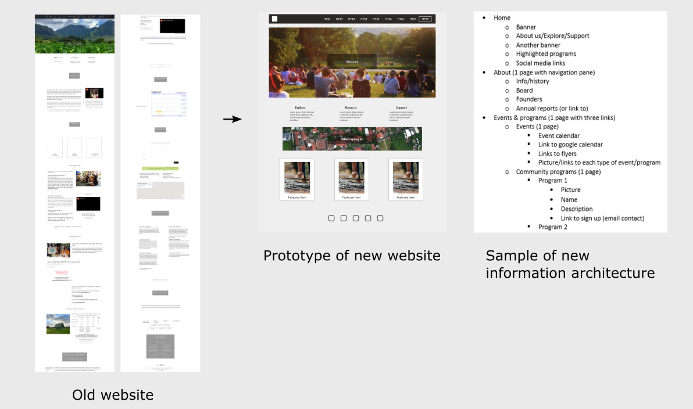

Improving a website with an awkward CMS

Overview
A community-based organization requested a UX audit of their website but were unaware of any issues. However, I observed that 80% of the site’s content was scattered throughout the lengthy homepage, and the organization and UI needed improvement. Their website’s content management system (CMS) was also ill suited to managing the volume of content on their website.
Because this was a volunteer project with limited human resources, I redesigned their website, reusing the current CMS, content and layout as much as possible. Guidelines and templates were also provided to make content management easier and avoid UX issues.
Process
I interviewed the stakeholders to understand the goals of the website and any issues they may have. The goal was to inform community members and visitors about events and increase donations in the long term. After examining the website; the following goals were set: the reorganization of content (with room for expansion when the organization launches more initiatives), the improvement of the site’s UI (increasing visual order and consistency), and creating interaction flows that encourage visitors to attend advertised events.
I conducted a content inventory of the website and interviewed the site owner to understand the purpose of each piece of content. A new content structure was proposed, which left room for the anticipated future expansion in content. In order to ensure that key content was still easily accessible I proposed a homepage design that still highlighted them.
I created wireframes for the new web pages and examined the current design through the website’s CMS. While it was a drag-and-drop interface suited for less technical users, it was not optimal for managing a larger content structure or enabling some of the interactions proposed for the redesign. The CMS demanded that every element on the website be placed and adjusted manually. This provided an indication of why the visuals on the website were lacking in certain areas. The wireframes and content structure were adjusted to cater for these limitations while maintaining good UX as much as possible.
Medium and high-fidelity prototypes were created to present options for colors and fonts. Design specifications and CMS templates were created to provide best practices for content placement, page layouts, and branding. I worked with the client to rebuild the site according to these specifications, and they were given a copy of the guidelines and blank templates. This was ensure that they could maintain a good UX in the long term and avoid the problem of the homepage expanding excessively.